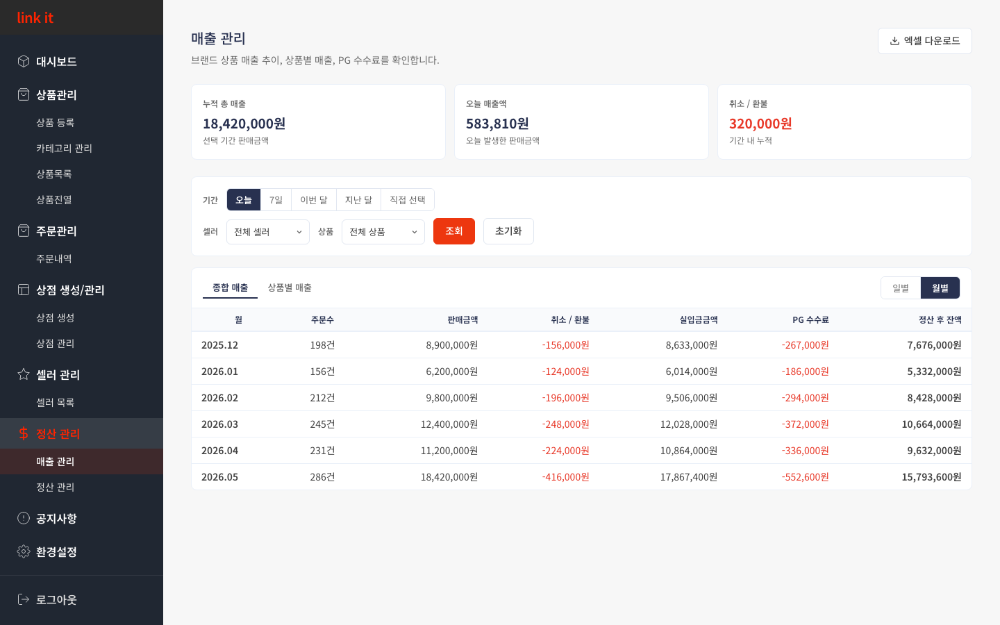
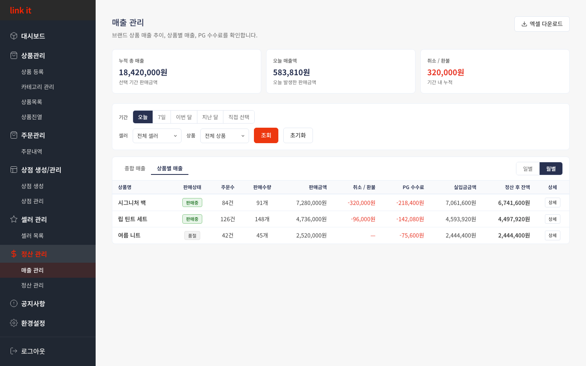
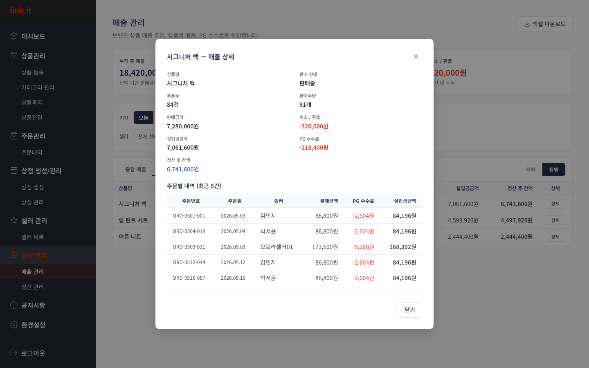
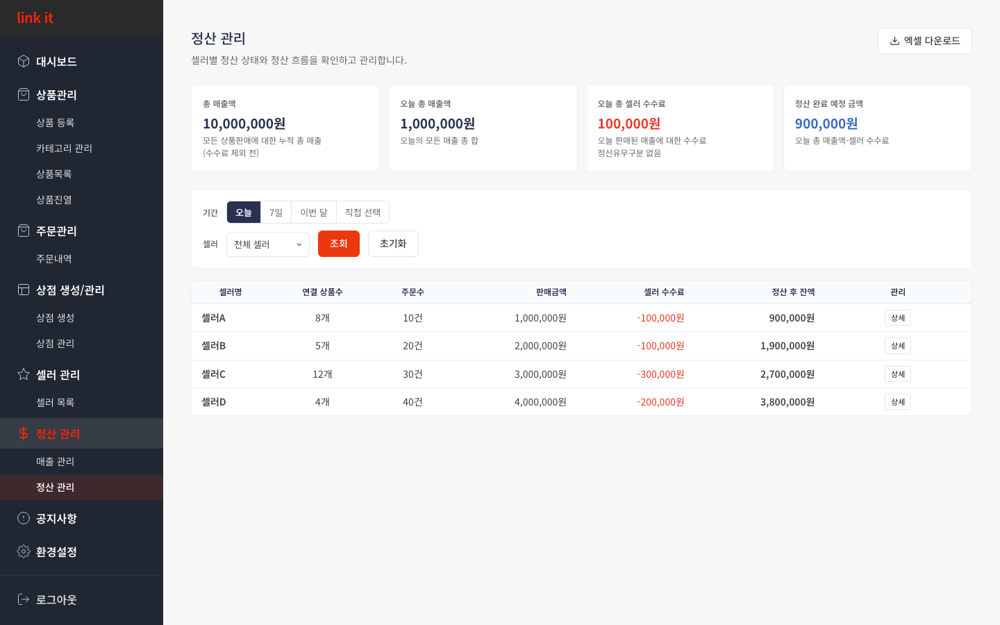
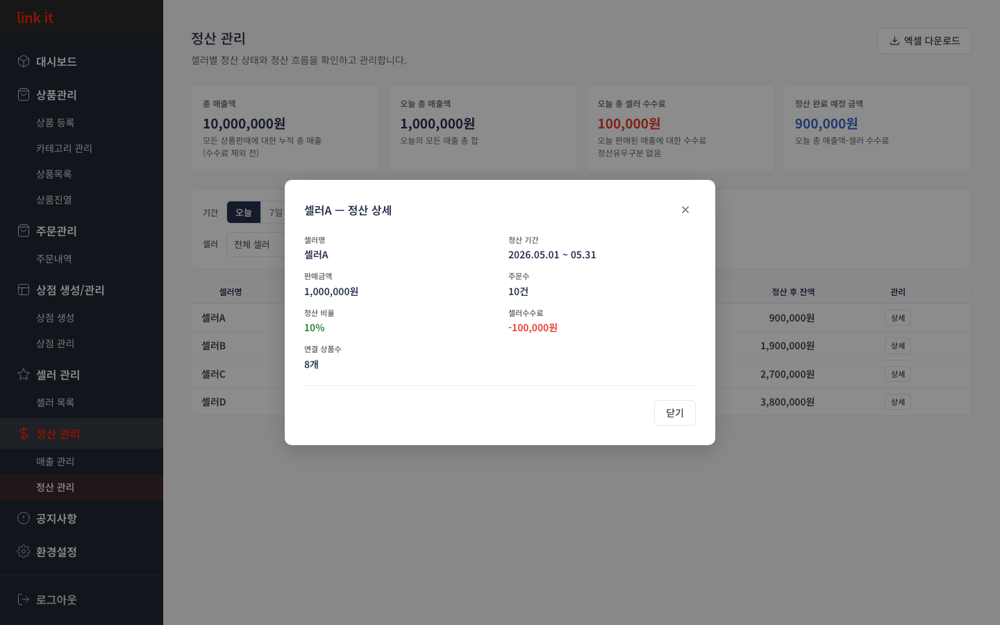

CHAPTER 6
정산관리
매출 분석 · 정산 현황
6.1
매출 관리 — KPI 요약 & 기간·셀러·상품 필터 조회
누적 매출·오늘 매출·취소 환불을 KPI 카드로 파악하고, 기간별 종합 매출 테이블로 추이를 확인합니다.

1
2
3
사용 방법
1
KPI 카드로 핵심 수치 확인
누적 총 매출(선택 기간), 오늘 매출액, 취소·환불 금액 3가지를 카드로 한눈에 파악합니다. 붉은 숫자는 차감 항목입니다.
2
기간·셀러·상품 필터 후 [조회]
기간 버튼(오늘·7일·이번 달·지난 달·직접 선택)과 셀러·상품 드롭다운을 설정 후 [조회]합니다.
3
종합 매출 테이블로 추이 확인
주문수·판매금액·취소환불·실입금금액·PG 수수료·정산 후 잔액이 기간별로 표시됩니다. [일별/월별] 토글로 집계 단위를 바꿀 수 있습니다.
💡 정산 후 잔액
= 판매금액 − PG 수수료 − 셀러 수수료(9%) − 취소·환불
6.2
매출 관리 — 상품별 매출 분석
상품 단위로 주문수·판매금액·PG 수수료·정산 후 잔액을 비교해 수익 기여도를 파악합니다.

1
2
3
사용 방법
1
[상품별 매출] 탭 전환
테이블 위 [상품별 매출] 탭으로 전환하면 상품 단위 집계 테이블이 표시됩니다.
2
판매금액·수수료·정산 후 잔액 비교
각 상품의 판매금액·취소환불·PG 수수료·실입금금액·정산 후 잔액이 한 줄에 표시됩니다. 판매상태 배지(판매중·품절)도 확인할 수 있습니다.
3
[상세]로 주문별 내역 확인
행 오른쪽 [상세] 버튼을 클릭하면 해당 상품의 주문별 상세 내역 팝업이 열립니다.
6.3
매출 관리 — 상품 매출 상세 · 주문별 내역 확인
특정 상품의 주문번호·결제금액·PG 수수료·실입금금액을 건별로 확인합니다.

1
2
3
사용 방법
1
상단 요약에서 수익 구조 파악
판매금액·취소환불·실입금금액·PG 수수료·정산 후 잔액(파란색)을 요약 그리드에서 확인합니다.
2
주문별 내역으로 건별 수수료 확인
최근 5건의 주문번호·주문일·셀러·결제금액·PG 수수료·실입금금액을 건별로 확인합니다.
3
[닫기] 또는 ESC로 팝업 닫기
확인 완료 후 [닫기] 버튼이나 우상단 ✕, ESC 키로 닫습니다.
💡 우상단 [엑셀 다운로드]
로 현재 조회 조건의 전체 매출 데이터를 파일로 내려받을 수 있습니다.
6.4
정산 관리 — 셀러별 정산 현황 조회 & 필터
KPI 카드로 오늘의 매출·수수료·정산예정금액을 파악하고, 기간·셀러별로 정산 데이터를 조회합니다.

1
2
3
사용 방법
1
KPI 카드로 정산 현황 파악
총 매출액·오늘 총 매출액·오늘 총 셀러 수수료(빨간)·정산 완료 예정 금액(파란)을 한눈에 확인합니다.
2
기간·셀러 설정 후 [조회]
기간 버튼과 셀러 드롭다운으로 조회 조건을 설정 후 [조회]합니다. [초기화]는 오늘·전체 셀러로 되돌립니다.
3
테이블 수수료·잔액 비교 및 [상세] 확인
셀러별 연결 상품수·주문수·판매금액·셀러 수수료·정산 후 잔액을 비교합니다. [상세] 버튼으로 셀러 개별 정산 내역을 확인하세요.
💡 정산 후 잔액
= 판매금액 − 셀러 수수료 (셀러별 정산 비율 적용)
6.5
정산 관리 — 셀러 정산 상세 확인
특정 셀러의 정산 기간, 판매금액, 정산 비율, 셀러 수수료, 연결 상품수를 상세히 확인합니다.

1
2
3
사용 방법
1
정산 기간·판매금액·주문수 확인
팝업 상단에서 정산 기간, 판매금액, 주문수를 확인합니다. 조회 기간과 일치하는지 먼저 확인하세요.
2
정산 비율·셀러 수수료 확인
정산 비율(초록)과 셀러 수수료(빨간 음수)를 확인합니다. 수수료 = 판매금액 × 정산 비율입니다. 이상이 있으면 셀러 관리에서 비율을 조정하세요.
3
[닫기] 또는 ESC로 팝업 닫기
[닫기] 버튼, 우상단 ✕, 또는 ESC 키로 팝업을 닫습니다.
💡 우상단 [엑셀 다운로드]
로 현재 조회 조건의 셀러별 정산 데이터를 파일로 저장할 수 있습니다.
←
이전 챕터
5. 셀러 관리
CHAPTER 6 / 8
다음 챕터
7. 공지사항
→